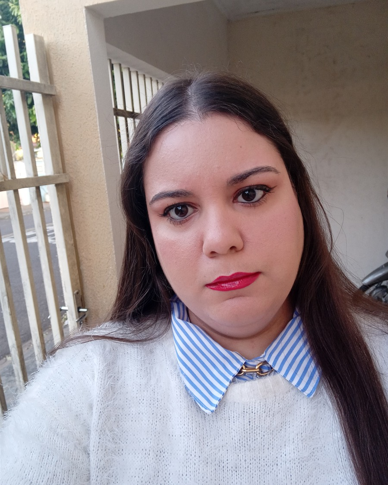

01
S.O.S: Sistema Orçamentário Simplificado
Trabalho de conclusão de curso: plataforma web de orçamentos para uma empresa de publicidade e comunicação visual, com controle de estoque e controle financeiro integrados.
Trabalhos e experiências
Nesta seção, apresento atividades desenvolvidas ao longo da minha formação em Desenvolvimento de Sistemas para Web, com o objetivo de demonstrar o aprendizado e a aplicação prática dos conteúdos estudados.
Além dos trabalhos, a página disponibiliza reprodutores de áudio e de vídeo, que complementam a apresentação do portfólio e permitem acompanhar o material de forma interativa.

Trabalho de conclusão de curso: plataforma web de orçamentos para uma empresa de publicidade e comunicação visual, com controle de estoque e controle financeiro integrados.
Aplicação web interativa para extração de paletas cromáticas a partir de imagens, com catalogação histórica de pigmentos, conta-gotas de precisão, verificação de contraste e exportação em CSS, Tailwind e PNG.
Espaço reservado para um jogo web em planejamento. Em breve, este cartão será atualizado com os detalhes do projeto e o link para acessar.
Uma apresentação em áudio para complementar meu portfólio.
Confira uma apresentação visual do meu trabalho.
Confira outra apresentação visual dos meus projetos.
Vamos conversar?
Gostou de algum projeto ou quer saber mais sobre as demonstrações? Envie uma mensagem para conversarmos.
Enviar mensagem